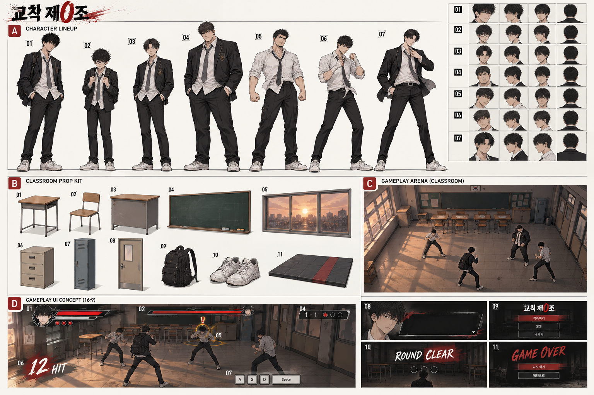
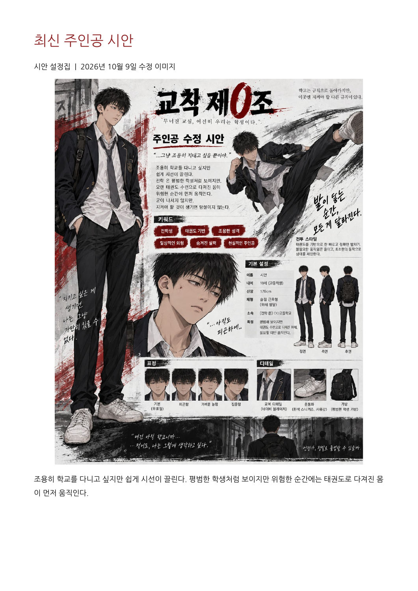
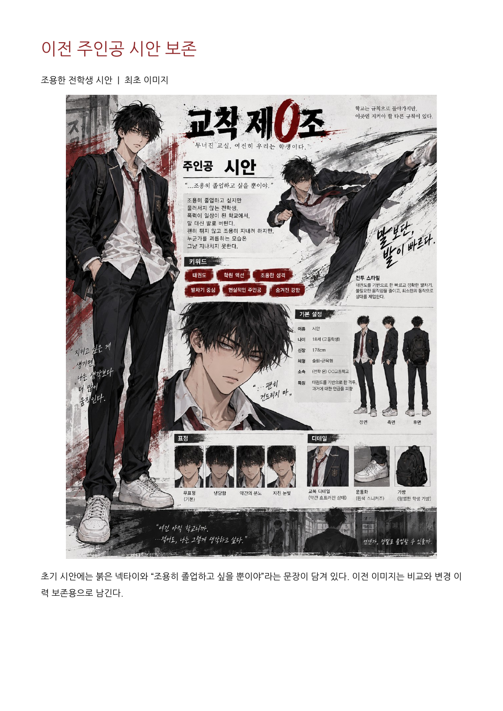
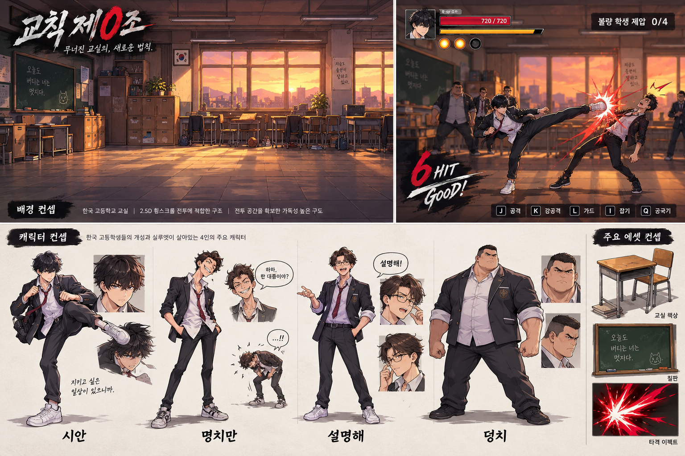
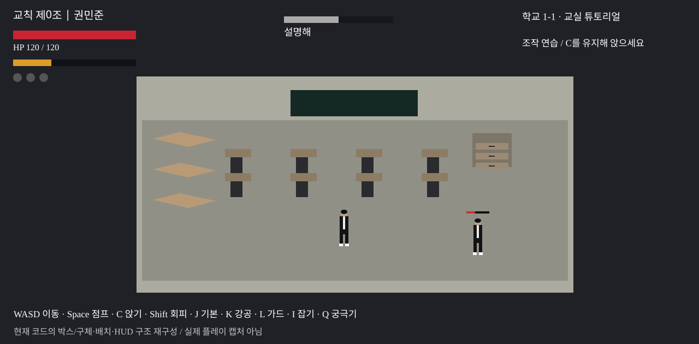

확정 설정
검은 교복·흰 셔츠·회색 넥타이·검정 가방·흰 운동화. 조용한 18세 태권도 전학생, 178cm 슬림 체형. 붉은 포인트의 절제된 학원 액션.
BLENDER MODELING · CHARACTER / ENVIRONMENT / HUD / VFX

게임 기획 전체가 아닌, 화면에 필요한 미술 제작과 Unity 전달에 집중한다.
검은 교복·흰 셔츠·회색 넥타이·검정 가방·흰 운동화. 조용한 18세 태권도 전학생, 178cm 슬림 체형. 붉은 포인트의 절제된 학원 액션.
단순 박스·구체로 만든 교실과 학생, 텍스트/사각형 HUD, 붉은 파티클/잔상. 최종 모델·전용 모션·완성된 버튼 UI와 구분한다.
보스와 일반 학생의 얼굴·헤어·체형 상세, 의자·문·교탁 등 추가 소품, 초상화와 메뉴 프레임. 제작 확정 또는 별도 Unity 연결이 필요하다.
이전 붉은 넥타이, HP720, 0/4 목표 표기 등은 과거 그림의 예시다. 최신 주인공 회색 넥타이와 실제 HP120·현재 라운드 목표를 우선한다.
주요 인물 7명(플레이어·튜토리얼3·보스3) + 일반 A/B/강화형 3변형을 권장한다. 94명은 캠페인 누적 출현 수이며 94개의 고유 모델을 만들지 않는다. 실제 동시 적 수는 매우쉬움3명·보통4명, 보스전1:1.
| 캐릭터 | 배경·소품 | UI | 이펙트 | 애니메이션 |
|---|---|---|---|---|
| 9 작업 묶음 | 23 작업 묶음 | 24 작업 묶음 | 10 작업 묶음 | 21 작업 묶음 |
총87개 작업 묶음. 묶음 수는 FBX/PNG 개수와 다르며 공용 부품·리그·머티리얼·클립을 재사용한다. ‘구현’은 코드에 기능/임시 그래픽이 있다는 뜻이며 새 에셋이 자동 적용된다는 뜻은 아니다.
첨부된 「교칙제0조_시안서_WASD.pdf」의 최신 이미지와 최초 이미지를 함께 보존한다.


이전에 생성했던 교실/전투/학생/소품 컨셉을 한 장에 보존한다.

Blender 제작을 위한 실루엣·소품·배치·UI 예시. 정밀한 정투영 모델 도면은 아니다.
A01 주인공 · A02 명치만 · A03 설명해 · A04 덩치 · A05 도재학 · A06 한승빈 · A07 황빈. 안경·손목 천·교표·세부 복장은 미확정 제안. 교탁/의자/문·메뉴 버튼은 아직 없는 기능과 별도 연결이 필요하다.
현재 소스의 형태와 위치를 도식화했다. 실제 플레이 캡처가 아니다.

회색 박스 바닥 → 타일/마루. 갈색 상판/받침 → 책상. 검정 사각형 → 칠판. 창 색/바닥 빛 → 창틀·노을·조명. 서랍 박스 → 완성 가구.
구체 머리·머리카락, 박스 교복·가방·신발, 단순 팔다리 회전 → 스킨드 메쉬·공통 리그·전용 클립. 피벗과 캡슐 위치를 유지하며 맞춘다.
사각형 바·원형 구슬·흰 텍스트 → 분리된 UI 프레임/채움/아이콘. 붉은 점 파티클·Capsule 잔상 → 충격 텍스처·캐릭터 잔상.
7명의 주요 인물 + 일반 학생 변형. 최신 주인공 외형과 적 실루엣 차이를 우선한다.
| ID / 항목 | 상태 / 우선 | 수량 | 외형·제작 지침 | Unity 연결·주의 |
|---|---|---|---|---|
| CH01 주인공 시안 / 코드 권민준 | 시안서+구현 P0 | 1 | 슬림 178cm·검은 교복·흰 셔츠·회색 넥타이·검정 가방·흰 운동화. 기본/피곤/놀람/집중 표정 | 태권도 플레이어 리그. 이름은 확정 필요 |
| CH02 명치만 | 구현·외형 제안 P0 | 1 변형 | 약한 학생·작은 실루엣·흐트러진 머리. 이미지의 안경은 선택 제안 | HP12·오프닝 한 타 제압. 접근/대사/책상 차기/피격/쓰러짐 |
| CH03 설명해 | 구현·외형 제안 P0 | 1 변형 | 보통 체형·정돈된 가르마·단정한 교복 | HP36·이동/점프/앉기 안내 상대. 대사 표정 |
| CH04 덩치 | 구현·외형 제안 P0 | 1 체형 변형 | 넓은 어깨·굵은 팔·큰 몸통. 키보다 폭으로 구분 | HP72·전투 연습 상대. 현재 코드는 몸 크기까지 구분하지 않음 |
| CH05 일반 학생 A / B | 구현·외형 제안 P1 | 2 외형 변형 | 보통/마른 체형·머리와 교복 착용 변형. HP별로 모델을 따로 만들지 않음 | HP24/48 또는36/60·공통 적 리그. 일반 적 궁극기 금지 |
| CH06 강화 일반 학생 | 구현·외형 제안 P1 | 1 외형 변형 | 일반 학생보다 굵은 체형·넥타이/소매 차이. 보스로 오인할 왕관 등 제외 | 1-6~1-9 마지막 적 HP84·궁극기 없음 |
| CH07 도재학 / NO.3 | 구현·외형 제안 P1 | 1 | 단단한 체형·짧은 머리·느슨한 넥타이. 상세 복장은 제안 | 1-5 보스 HP240·전 기능 공통 모션+주먹작렬 |
| CH08 한승빈 / NO.2 | 구현·외형 제안 P1 | 1 | 날렵한 복서 체형·상체 가드 실루엣. 흰 셔츠/손목 천은 제안 | 1-10 보스 HP300·잽/스트레이트/K.O 펀치 |
| CH09 황빈 / NO.1 | 구현·외형 제안 P1 | 1 | 빠른 스텝의 운동 체형·정돈된 헤어·열린 블레이저는 제안 | 1-11 보스 HP360·잽/스트레이트/잡기 반격/빠른 스텝. 궁극기 이름 별도 확정 |
현재 교실 키트를 재사용한다. 별도 체육관·옥상·전 학년 환경은 필수 범위가 아니다.
| ID / 항목 | 상태 / 우선 | 수량 | 외형·제작 지침 | Unity 연결·주의 |
|---|---|---|---|---|
| EN01 교실 바닥 모듈 | 구현 P0 | 1 모듈 | 타일/마루 중 선택. 큰 바닥에 반복 UV 사용 | 현재 28×18 Unity unit. 현실 교실 실측이 아니라 플레이 공간 |
| EN02 뒤 벽 / 측벽 / 앞 가림벽 | 구현 P0 | 3~4 모듈 | 두께와 코너 연결·카메라 앞쪽 벽 낮추거나 숨기기 | 경계 Collider는 별도. 캐릭터를 가리는 높은 앞 벽 금지 |
| EN03 학생 책상 완성형 | 구현·세부 추가 P0 | 1 모델·8 배치 | 나무 상판·금속 다리·가방걸이 선택 | 현재 상판1.5×0.15×0.9·높이약0.8. 실제형 제안0.6×0.45×0.75m |
| EN04 학생 의자 | 추가 제안 P0 | 1 모델·8 배치 | 책상과 같은 목재/철재. 등받이+좌판 | 현재 코드에 없음. 전투 동선을 막지 않게 배치 |
| EN05 오프닝 이동 책상 | 구현·완성형 교체 P0 | 책상 재사용 1 | 별도 고유 모델 불필요·책상 전체가 움직이게 결합 | 현재 임시 상판만 날아감. 차기/넘어짐 연출용 피벗 |
| EN06 칠판 / 프레임 | 구현 P0 | 1 | 어두운 녹색·프레임·가로형 | 현재8×2 unit·벽 부착. 글씨는 별도 텍스처 |
| EN07 창문 / 창틀 / 유리 | 구현·세부 추가 P0 | 1 모듈·3 배치 | 투명 유리는 단순화·좌측 노을빛 | 현재 창1.5 높이×1.8 깊이. 창 구멍은 실제 모델에 필요 |
| EN08 서랍장 / 서랍 앞판 / 손잡이 | 구현 P0 | 1 세트 | 몸체+앞판3+손잡이3. 독립 부품 제작 후 정적 결합 가능 | 현재2.4×1.3×1 unit. 상호작용 없음 |
| EN09 복도 사물함 | 구현 P1 | 1 모듈·8 배치 | 청회색 철제·문/통풍구/번호표·반복 | 2번째 일반 라운드에 배치. 현재1.5×2.2×0.8unit |
| EN10 보스전 매트 / 흰 라인 | 구현 P1 | 1 타일+라인 텍스처 | 짙은 회청색·중앙/양쪽 경계 라인 | 현재19×12 unit. 실제 시설은 교실 키트 재사용 |
| EN11 교실 출입문 / 문틀 | 추가 제안 P0 | 1 모듈 | 미닫이 또는 여닫이 중 확정·뒤/옆 벽 배치 | 문 열기 기능 없음. 다음 라운드 출구 시각화용 |
| EN12 복도 벽 / 바닥 모듈 | 추가 제안 P1 | 각1 | 교실 키트와 소재 공유·사물함 공간 | 현재 복도도 같은 교실 공간이며 별도 긴 복도 미구현 |
현재 교실 키트를 재사용한다. 별도 체육관·옥상·전 학년 환경은 필수 범위가 아니다.
| ID / 항목 | 상태 / 우선 | 수량 | 외형·제작 지침 | Unity 연결·주의 |
|---|---|---|---|---|
| EN13 교탁 / 교사용 책상 | 추가 제안 P1 | 1 | 후면 칠판 근처·전투 공간 바깥 | 사진 참고 이미지 B03. 현재 코드에 없음 |
| EN14 칠판 받침 / 분필 / 지우개 | 추가 제안 P2 | 3 작은 모델 | 저해상도에서는 받침과 소품 합치기 | 배경 장식. 분필 입자 기능 없음 |
| EN15 벽 시계 | 추가 제안 P2 | 1 | 단순 원형·학교 분위기 | 시간 시스템 없음 |
| EN16 게시판 / 시간표 / 공지 종이 | 추가 제안 P2 | 판1+텍스처 세트 | 텍스트를 모델링하지 않고 이미지로 | 학교명 미확정. 작은 글씨보다 큰 구성 우선 |
| EN17 천장 형광등 | 추가 제안 P2 | 1 반복 | 천장 없이 등만 배치 가능·카메라 시야 주의 | 실시간 광원 여러 개를 늘리지 않기 |
| EN18 책 / 공책 / 필통 / 연필 | 추가 제안 P2 | 4 소품·색 변형 | 책상 위 세트·작게 보이는 것은 한 메시에 | 집기/투척 기능 없음 |
| EN19 휴지통 / 청소도구 | 추가 제안 P2 | 통1·빗자루1·받기1 | 구석에만 배치 | 상호작용 없음 |
| EN20 검정 가방 / 스트랩 | 시안서+구현 P0 | 1·캐릭터 공용 가능 | 블레이저와 겹치지 않게·등에 고정 또는 간단한 뼈 | 주인공 가방은 시안서 확정. 모든 적이 가방을 들지는 미확정 |
| EN21 흰 운동화 / 교복 / 넥타이 / 교표 | 시안서+구현 P0 | 공용 부품 세트 | 운동화 좌우·교복 몸체·교표 텍스처 | 교표와 학교명은 임시 제안. 상세 로고 제작 확정 필요 |
| EN22 창밖 노을 / 먼 건물 | 빛 구현·배경 추가 P1 | 1 배경 이미지 또는 단순 메쉬 | 먼 건물은 2D 배경 카드로 충분 | 현재는 창 색+바닥 빛 평면뿐. 볼류메트릭 효과 아님 |
| EN23 출구 표식 / 바닥 안내 | 진행 구현·외형 추가 P1 | 1 아이콘/평면 | 오른쪽 출구 방향을 명확히 표시 | Enter 또는 우측 출구로 다음 라운드. 실제 출입문 이동 아님 |
동적 숫자와 글자는 Unity에서 넣고, 프레임·채움·키캡·상태 이미지로 분리한다.
| ID / 항목 | 상태 / 우선 | 수량 | 외형·제작 지침 | Unity 연결·주의 |
|---|---|---|---|---|
| UI01 게임 제목 / 로고 | 텍스트 구현·그래픽 추가 P0 | 1 | 교칙 제0조·검정/흰색+붉은 0·투명 배경 PNG | PDF 표지 분위기 참고·웹 바닥 제목과 게임 HUD 제목 구분 |
| UI02 플레이어 초상화 | 추가 제안 P1 | 기본1·선택 표정4 | CH01의 얼굴 렌더/손그림 | 현재 HUD는 이름 텍스트뿐 |
| UI03 플레이어 체력바 | 구현 P0 | 배경/채움/프레임 3 | 붉은 채움·낮은 HP에서도 읽히는 대비 | 최대120·수치 텍스트는 동적 생성 |
| UI04 궁극기 게이지 | 구현 P0 | 배경/채움/프레임 3 | 황금/주황색·HP와 구분 | 게이지 값은 동적 |
| UI05 궁극기 구슬 | 구현 P0 | 빈/활성 2·선택 발광1 | 3개 슬롯에 같은 스프라이트 재사용 | 3개를 각각 고유 이미지로 만들 필요 없음 |
| UI06 궁극기 기술 표시 | 기술 구현·UI 추가 P1 | 아이콘3 | 연속차기 / 반격연계 / 천파일격 | 스킬 선택창 아님·현재 상태에 맞춰 표기하는 제안 |
| UI07 상단 대상 적 HP / 이름 | 구현 P0 | 바 세트1 | 일반 적과 보스 표기 구분 가능 | 현재는 선택된 대상 HP만 표시 |
| UI08 머리 위 적 체력바 | 구현 P0 | 배경/채움 2 | 작고 간결하게·카메라 향함 | 상단 적 바와 별도 World Space UI |
| UI09 보스 명패 / NO. 표시 | 보스 구현·그래픽 추가 P1 | 공용1+초상3 | 도재학 NO.3 / 한승빈 NO.2 / 황빈 NO.1 | 등장 컷인 시스템은 미구현 |
| UI10 공격 예고 | 구현 P0 | 노란 표식1·선택 링1 | 느낌표/예고 문구·체력바와 분리 | 실전1-1~1-4만. 튜토리얼 코드도 예고 사용; 보스 상시 예고로 확장 금지 |
| UI11 스테이지 / 라운드 / 남은 적 | 구현 P0 | 패널1 | 1-1~1-11·현재/총 라운드·증원 포함 남은 적 | 숫자는 이미지에 굽지 않음 |
| UI12 튜토리얼 목표 / 진행 | 구현 P0 | 패널1·선택 체크2 | 짧은 문구+키·기본공격 연속3회 진행 | 학교1-1 제목과 별도 안내 |
동적 숫자와 글자는 Unity에서 넣고, 프레임·채움·키캡·상태 이미지로 분리한다.
| ID / 항목 | 상태 / 우선 | 수량 | 외형·제작 지침 | Unity 연결·주의 |
|---|---|---|---|---|
| UI13 키보드 조작 안내 | 구현 P0 | 공용 키캡1 | WASD/Space/C/Shift/J/K/L/I/Q/Esc/Enter/R | 글자는 Unity Text로 재사용 |
| UI14 콤보 N HIT / GOOD! | 구현 P0 | 강조 패널/효과1 | 붉은 붓 질감·좌측 아래 | N은 실제 연속 적중 수·6 이상 GOOD |
| UI15 대사 / 내레이션 | 텍스트 구현·패널 추가 P0 | 대사창1·화자 초상 선택 | 오프닝 4줄·책상 차기 반응 | 현재 이름창/초상 분리 없음 |
| UI16 일시정지 | 텍스트 구현·버튼 추가 P0 | 암전/패널1 | 현재 Esc 재개 문구 | 계속/설정/나가기 버튼은 UI 연결 작업 필요 |
| UI17 라운드 클리어 / 다음 라운드 | 텍스트 진행 구현·그래픽 추가 P1 | 패널1 | Enter 안내·다음 라운드 표기 | 참고 그림 ROUND CLEAR 영어는 예시, 한글 권장 |
| UI18 사망 / 재도전 | 진행 구현·그래픽 추가 P1 | 패널1 | R로 현재 라운드 재도전·보스는 보스부터 | 메인으로 버튼은 미구현 |
| UI19 1-11 캠페인 완료 | 텍스트 진행 구현·그래픽 추가 P1 | 패널1 | 완료·R 다시 시작 | 정산 등급/보상 시스템 없음 |
| UI20 버튼 공용 상태 | 추가 제안 P1 | 기본/호버/누름/비활성 4 | 9-slice 패널·키보드 포커스 가독성 | 메뉴 버튼 실제 클릭 구현 추가 필요 |
| UI21 설정 화면 | 추가 제안 P2 | 패널/슬라이더/토글 세트 | 음량/화면/조작 안내 | 설정 저장 기능 없음 |
| UI22 타이틀 / 시작 메뉴 | 추가 제안 P2 | 배경1·공용 버튼 | 시작/조작/설정 | 현재 바로 오프닝 실행 |
| UI23 한국어 폰트 / 글자 규칙 | 구현 P0 | 1 라이선스 포함 | 현재 NotoSansCJKkr-Regular 우선·작은 글씨 금지 | 글꼴은 모델링하지 않음·배포 라이선스 확인 |
| UI24 웹 로딩 / 오류 / 전체화면 | 웹 구현·그래픽 교체 P1 | 진행바/표식 세트 | 로드 진행·명확한 오류·전체화면 | 게임 Canvas 바깥 HTML/CSS 작업과 구분 |
현실적인 교복 액션을 유지하고 붉은 타격/잔상·노란 공격 예고로 정보를 구분한다.
| ID / 항목 | 상태 / 우선 | 수량 | 외형·제작 지침 | Unity 연결·주의 |
|---|---|---|---|---|
| FX01 일반 타격 스파크 | 구현 P0 | 1 텍스처 세트 | 작은 붉은 충격선·흰 중심 | 현재 붉은 파티클22개·재사용 |
| FX02 강공격 충격 | 공격 구현·외형 추가 P1 | 1 변형 | 일반보다 넓고 짧게 | 피해를 시각적으로 구분 |
| FX03 회피 잔상 | 구현 P0 | 1 머티리얼/스냅샷 방식 | 붉은 반투명 캐릭터 실루엣 | 현재 붉은 Capsule 잔상·완성 모델 스냅샷 교체 연결 필요 |
| FX04 발차기 궤적 | 추가 제안 P1 | 1 리본/텍스처 | 흰/붉은 짧은 곡선 | 3D 검/무기 없음 |
| FX05 가드 / 타이밍 방어 | 방어 구현·외형 추가 P1 | 각1 | 가드 작은 충격·타이밍 방어 더 선명한 섬광 | 가드 성공과 일반 피격을 구분 |
| FX06 착지 / 이동 먼지 | 추가 제안 P2 | 1 | 바닥 근처 작은 먼지 | 동시생존 최대4명·입자 수 제한 |
| FX07 연속차기 / 반격연계 / 천파일격 | 기술 구현·외형 추가 P1 | 3 변형 | 연타 궤적/반격 섬광/큰 단타 붉은 충격 | 전면 붉은 플래시와 긴 시야 차단은 피하기 |
| FX08 주먹작렬 | 기술 구현·외형 추가 P1 | 1 | 직선 전진 펀치 궤적 | 도재학 보스만·일반 적 금지 |
| FX09 K.O 펀치 / 황빈 궁극기 | 기술 구현·외형 추가 P1 | 공유1+변형1 | 스트레이트의 강한 충격과 후광 | 황빈 기술명/고유 연출 미확정 |
| FX10 노을 바닥 빛 / 그림자 | 간이 구현 P0 | 1 빛 텍스처/광원 설정 | 창틀 그림자·따뜻한 빛·바닥 접지 그림자 | 블록형 바닥 빛을 최종 조명으로 교체. 빛 자체는 물건 모델 아님 |
모델만 교체해서 모든 기술이 완성되지는 않는다. 클립 제작과 Unity 상태 연결이 필요하다.
| ID / 항목 | 상태 / 우선 | 수량 | 외형·제작 지침 | Unity 연결·주의 |
|---|---|---|---|---|
| AN01 서있기 / 호흡 | 상태 구현·클립 필요 P0 | 플레이어/적 기본2 | 전투 기본 자세와 평상시 자세 | Loop·공용 리그 재사용 |
| AN02 걷기 / 방향 전환 / 정지 | 간이 구현·클립 필요 P0 | 전진/후진/좌우/회전/정지 | WASD 평면 이동 | 코드로 전체 몸 회전. 스트레이프와 후진 별도 선택 |
| AN03 점프 / 낙하 / 착지 | 상태 구현·클립 필요 P0 | 3 | 낮은 점프·몸 접기·착지 회복 | 점프 힘/위치는 물리 코드 권한 |
| AN04 앉기 진입 / 유지 / 복귀 | 상태 구현·클립 필요 P0 | 3 | 무릎·골반을 접고 발은 바닥 유지 | 현재 적은 모델 축소 방식·완성 리그 연결 필요 |
| AN05 회피 / 복싱 스텝 | 상태 구현·클립 필요 P0 | 앞/뒤/좌/우 | 짧은 회피·황빈 빠른 치고 빠지기 | Root Motion 기본 OFF·이동은 코드 |
| AN06 기본공격 1~3 발차기 | 간이 구현·클립 필요 P0 | 3 | 앞차기/돌려차기 등 구체 기술은 제안 | 현재 같은 오른발 킥 반복·기술명을 임의 확정하지 않음 |
| AN07 강공격 발차기 | 간이 구현·클립 필요 P0 | 1 | 크고 읽히는 발차기·후딜 명확 | 준비/적중/회복 구간 |
| AN08 가드 진입 / 유지 / 해제 | 간이 구현·클립 필요 P0 | 3 | 양팔·상체 방어 | Loop 유지 |
| AN09 가드 피격 / 타이밍 방어 | 판정 구현·클립 필요 P1 | 2 | 막은 반동·순간 반격 자세 | 판정 시간과 클립 동기화 필요 |
| AN10 일반 피격 / 강한 피격 / 경직 | 상태 구현·클립 필요 P0 | 3 | 상체 반응·넉백 시작 | 루트 위치를 두 번 이동시키지 않음 |
| AN11 넘어짐 / 쓰러진 유지 / 일어나기 | 간이 구현·클립 필요 P0 | 3 | 튜토리얼 상대 복구 포함 | 모든 적 ragdoll 필수 아님·클립 방식 권장 |
모델만 교체해서 모든 기술이 완성되지는 않는다. 클립 제작과 Unity 상태 연결이 필요하다.
| ID / 항목 | 상태 / 우선 | 수량 | 외형·제작 지침 | Unity 연결·주의 |
|---|---|---|---|---|
| AN12 잡기 시작 / 잡힌 상태 / 밀어내기 / 풀림 | 판정 구현·클립 필요 P1 | 공격자·피격자 짝 세트 | 두 사람 손/가슴 접점 정렬 | 잡기 anchor·손 IK 위치가 필요 |
| AN13 잡기 반격 | 판정 구현·클립 필요 P1 | 공격자·피격자 짝 세트 | 황빈 반격·피격자 경직 | 다른 무술 기술 추가 아님 |
| AN14 연속차기 | 기술 구현·클립 필요 P1 | 1 시퀀스 | 현재 세 번 타격·연속 발차기 | 공격 Event를 장식과 실제 판정에 중복 호출 금지 |
| AN15 반격연계 | 기술 구현·클립 필요 P1 | 대기/성공 연계 2 | 반격 대기→성공 시 연계 | 실패시 공격하지 않는 경로도 필요 |
| AN16 천파일격 | 기술 구현·클립 필요 P1 | 1 | 준비→강한 단타 발차기→회복 | 최종 폼 미확정 |
| AN17 적 잽 / 스트레이트 | 간이 구현·클립 필요 P0 | 2 | 왼팔 짧은 잽·오른팔 직선 | 한승빈·황빈 공격 기술은 이 두 가지 중심 |
| AN18 주먹작렬 / K.O 펀치 | 기술 구현·클립 필요 P1 | 2·황빈 변형 재사용 | 직선 강펀치·도재학 전진 | 보스 전용·일반 몹 궁극기 없음 |
| AN19 책상에 엎드려 자기 / 일어나기 | 간이 구현·클립 필요 P0 | 2 | 시안서 피곤한 주인공·책상 높이 맞추기 | 현재 몸 전체를 기울인 임시 연출 |
| AN20 명치만 접근 / 책상 차기 / 명치 피격 | 연출 구현·클립 필요 P0 | 3 | 책상 차기와 한 타 제압 | 현재 책상은 코드로 날아감·발과 책상 접점 연결 필요 |
| AN21 기본 / 피곤 / 놀람 / 집중 표정 | 시안서 확정·표현 필요 P1 | 4 Shape Key 또는 텍스처 | 작은 gameplay 얼굴은 최소·초상 렌더에서 활용 | 립싱크 필수 아님 |
권장 시작값이며 성능이나 자동 호환을 보장하는 수치는 아니다.
1 Blender unit = 1m. 시안 키1.78m는 시안서 기준. 현재 게임 Capsule은 높이2·반지름0.4이고 VisualRoot는 몸 중앙 근처다. FBX 발바닥 원점을 가져올 때 프리팹 모델 오프셋을 맞춘다.
Blender Z-up → Unity Y-up. 일반 FBX Forward -Z / Up Y에서 시험하고 실제 전방·발바닥 확인 후 고정. Scale/Rotation·음수 스케일 점검. 리그 후 무작정 Transform 적용 금지.
캐릭터5천~1만tri/인물·텍스처1024부터. 확대가 필요한 주인공/보스는1만~1만5천tri·2048을 검토. 작은 소품100~1500tri. 소재·아틀라스 재사용 후 브라우저 FPS로 조정.
Base Color 우선, Normal/Mask 선택. Blender 노드는 Unity로 그대로 전송되지 않는다. Bake/Export 후 Built-in/SchoolToon 재질에 연결하고 지원 슬롯을 확인한다.
Root/Hips/Spine/Chest/Neck/Head와 양팔·손·양다리·발·발끝. 슬림/표준/덩치 몸체 파생에 같은 골격을 우선. 킥의 골반·무릎, 잡기의 손 접점, 교복 겨드랑이 관통을 검토.
30fps 편집·In-place·Root Motion OFF부터. 이동은 Rigidbody/코드가 담당한다. 타격 시점을 맞추고 Animation Event로 기존 타격을 중복 발생시키지 않는다.
정밀 제작 전: 이 문서의 이미지는 컨셉 참고다. 같은 높이 기준선의 정면/측면/후면 A-pose/T-pose 도면을 별도로 만들고, 모델1개를 Unity 카메라에서 먼저 확인한 뒤 나머지 인물을 제작한다.
Blender는 인물 초상/소품 아이콘 렌더에, 패널·텍스트·버튼은 2D 제작 도구에 적합하다.
현재 기준1920×1080. 좌상단 HP/게이지/구슬, 상단 가운데 대상 적 HP/이름, 우상단 스테이지/과제, 좌하단 콤보, 하단 조작. 머리 위 적 HP는 별도 World Space UI.
HP는 배경·채움·프레임. 구슬은 빈/활성 이미지2개를3슬롯에 재사용. 숫자·스테이지·남은 적·콤보는 이미지에 굽지 않는다. 한글 텍스트와 패널을 분리한다.
투명PNG·편집 원본 보관. 초상512px, 아이콘128~256px, 패널9-slice부터. 그림자·테두리·모서리 여백 일관성. UI 전체 한 장 Bake 금지.
버튼 기본/호버/누름/비활성4상태. 키보드 포커스와 색 외 형태·문구로 상태 표시. NotoSansCJKkr-Regular 사용 가능, 폰트 배포 라이선스 동봉. 작은 브라우저에서 읽기 확인.
웹 UI 구분: 게임 HUD는 Unity Canvas, 웹 로딩·오류·전체화면은 HTML/CSS다. 같은 색/로고를 써도 제작·연결 위치가 다르다.
낮은 난이도 예고: 실전1-1~1-4만 노란 공격 예고. 튜토리얼에는 예고 코드가 있다. 보스와 이후 일반전까지 새 UI를 임의로 확대하지 않는다.
이미지를 보고 작은 소품부터 만들기보다, 주인공·동선·핵심 HUD부터 실제 카메라에서 확인한다.
주인공 모델1개+공통 리그 → Idle/걷기/킥/피격 → Unity 크기/축 시험 → 튜토리얼3명 → 바닥/벽/책상/칠판/창문/서랍 → HP/궁극기/과제/대사/콤보.
일반 A/B/강화형 → 보스3명 → 사물함/매트 → 잡기 쌍 모션·반격·궁극기 → 타격·가드·회피 효과 → 클리어/사망/완료 UI.
시계/게시판/분필/문구류/청소도구·먼지 → 타이틀/설정 메뉴. 동시 플레이어1+적4에서 실루엣·입자·가독성·FPS 검토.
모델: .blend + .fbx + 텍스처 + 정면/측면/후면 미리보기 + 크기/피벗/재질 설명. 캐릭터: 리그 규격·클립명/Loop 여부·Shape Key 목록. UI: 편집 원본 + 투명PNG + 상태별 이미지 + 9-slice 가이드 + 폰트 라이선스.
Source/Blender/Characters/CH01_Player.blend · Export/Models/Characters/*.fbx · Export/Textures/*_BaseColor.png · Export/UI/HUD/*.png · Export/UI/Portraits/*.png · Export/VFX/*.png · Export/Animations/*_Kick01.fbx.
주인공 표시 이름 시안/권민준, 학교 이름/교표, 일반 학생·튜토리얼·보스 세부 얼굴/헤어/복장, 실제형/게임형 책상 크기, 태권도 기본3타의 구체 폼, 황빈 궁극기의 명칭/고유 연출. 제안 이미지를 곧바로 확정 설정으로 취급하지 않는다.
참고 출처: 사용자 첨부 원본 PDF(최신/최초 주인공 이미지), 대화에서 생성한 초기 컨셉 이미지와 새 제작 컨셉 보드, 현재 C# 구현과 최신 사용자 확정 요청. 컨셉 이미지는 디자인 참고 자료이며 실행 화면 또는 완성 에셋 파일이 아니다.